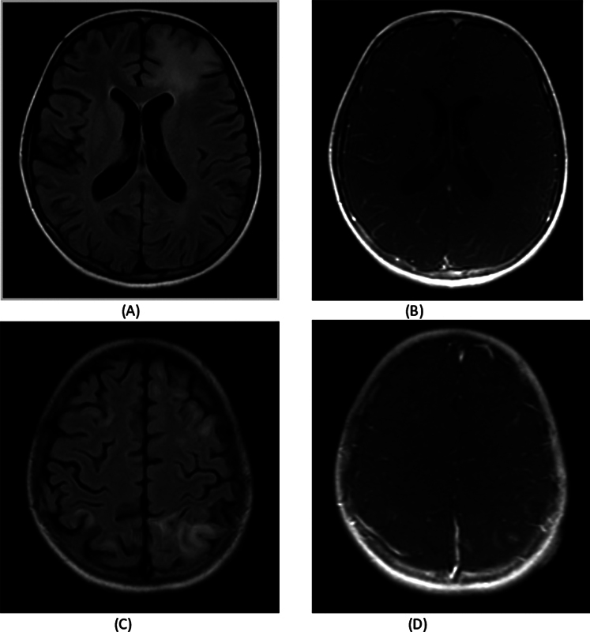
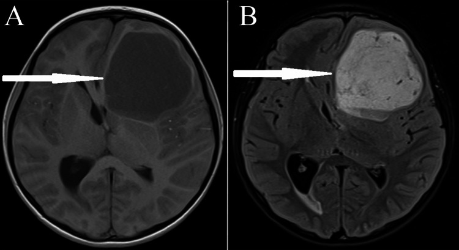
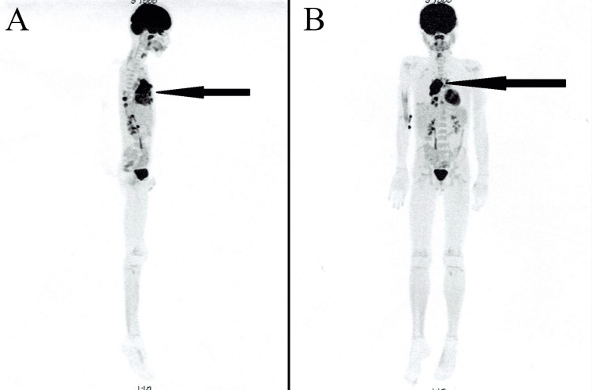

3004 — Ghép tế bào gốc đồng loài ở trẻ CMMRD: thay "nhà máy tạo máu" chứ không thay được mô đích / Allogeneic HSCT in constitutional mismatch repair deficiency
Tags: pattern:di-truyen-ung-thu pattern:da-u-dong-thoi pattern:u-nao pattern:da-u-toan-than vung:nao vung:toan-than vung:dai-trang vung:trung-that score:nguy-co-tich-luy protocol:MRI-so-nao-6-thang protocol:WBMRI protocol:HSCT incidentaloma:DVA
Mức chắc chắn (certainty): tổng hợp y văn (literature synthesis) — đọc trực tiếp toàn văn 6 bài mở qua Europe PMC/PMC (ERN GENTURIS 2024; J Clin Oncol 2021; Neurooncol Adv 2024; Fam Cancer 2026; J Korean Neurosurg Soc 2025; Cureus 2024) + 1 ca nguyên văn có ảnh (Indian J Radiol Imaging 2024). 3 ca nguyên văn dùng cho Blind Quiz. Phần "chọn người hiến" là suy luận (inference), ghi rõ tại chỗ — không có khuyến cáo chính thức riêng.
1. Tổng quan bệnh học – cơ chế hình ảnh
1.1. Vì sao gọi là "thiếu hụt sửa chữa lệch bẩm sinh" và vì sao nó sinh ung thư sớm
- CMMRD (constitutional mismatch repair deficiency) = đột biến biallelic (homozygous hoặc compound heterozygous) một trong 4 gen sửa chữa lệch (mismatch repair, MMR): MLH1, MSH2, MSH6, PMS2. Bố/mẹ dị hợp cùng gen đó = Lynch syndrome (ung thư đại tràng/nội mạc tử cung ở tuổi trưởng thành). Con nhận cả hai alen hỏng → mất hoàn toàn chức năng MMR ngay từ hợp tử (ERN GENTURIS 2024, PMC11607302).
- PMS2 chiếm ~60–65% các ca CMMRD; MLH1/MSH2 (thường thể homozygous missense) cho kiểu hình nặng nhất, khởi phát sớm nhất; PMS2 nói chung nhẹ hơn nhưng không đồng nhất (thể cắt ngắn/truncating nặng hơn missense) (J Korean Neurosurg Soc 2025, PMC12062528).
- Cơ chế "hypermutation": khi MMR hỏng, lỗi sao chép (đặc biệt ở các đoạn lặp vi vệ tinh — microsatellite) không được sửa → mỗi lần phân bào tích lũy thêm đột biến → tumor mutational burden (TMB) rất cao, MSI-high, nhiều neoantigen. Đây là lý do kép: (a) ung thư xuất hiện sớm và dày; (b) u đáp ứng mạnh với ức chế điểm kiểm soát miễn dịch (ICI) — nhưng cũng là lý do temozolomide phải tránh (thuốc alkyl hóa gây thêm đột biến trên nền MMR hỏng → siêu đột biến và kháng trị; ERN GENTURIS 2024, Rec. 6).
- Vì sao "mỗi 2 năm một ung thư mới": tổn thương nằm trong mọi mô có phân bào (não, đại tràng, tủy xương, đường niệu, nội mạc tử cung) → u đồng thời (synchronous) và nối tiếp (metachronous) là quy luật, không phải ngoại lệ. IRRDC ghi 106 bệnh nhân với > 40 loại u khác nhau (JCO Precis Oncol 2022, PMC8906457).
1.2. Ngưỡng định lượng bắt buộc (dùng để tư vấn và để đọc phim)
| Chỉ số | Con số | Nguồn |
|---|---|---|
| Nguy cơ ung thư tích lũy | > 90% ở 18 tuổi, ~100% ở 40 tuổi | JKNS 2025 (PMC12062528) |
| Tuổi chẩn đoán ung thư đầu tiên (trung vị) | 9,2 tuổi (khoảng 1,7–39,5) | JCO 2021 (PMC8407605) — 110 bệnh nhân/193 u ác |
| Phân bố u | CNS 51% (trong đó glioblastoma 66% u CNS), huyết học ~18% (trong đó T-lymphoblastic lymphoma 43%), phần còn lại tiêu hóa và khác | Cureus 2024 tổng hợp IRRDC (PMC11380470) |
| U đồng thời/nối tiếp | Trung bình một u mới mỗi ~2 năm | JKNS 2025 |
| Tỉ lệ ca CMMRD trong nhóm nghi NF1 mà gen NF1/SPRED1 âm tính | 0,41% | Eur J Hum Genet (theo JKNS 2025) |
1.3. Vì sao HSCT — và vì sao HSCT không chữa được CMMRD
Đây là điểm lõi của bài, và là chỗ hay bị hiểu sai khi tư vấn gia đình:
- Tủy xương là khoang duy nhất "thay được". Ung thư máu (ALL, AML, lymphoma) sinh ra từ tế bào gốc tạo máu của người bệnh — tế bào này mang đột biến biallelic MMR. Ghép tế bào gốc đồng loài (allo-HSCT) thay toàn bộ khoang tạo máu bằng tế bào của người hiến có MMR bình thường → loại bỏ nguồn gốc của bạch cầu/lymphoma tương lai, đồng thời tạo hiệu ứng ghép chống u (GvL).
- Nhưng não, đại tràng, đường niệu, nội mạc tử cung KHÔNG được thay. Tế bào thần kinh đệm, biểu mô ruột vẫn mang đột biến biallelic → nguy cơ u đặc không giảm. Vì vậy HSCT là dự phòng một phần, không phải chữa khỏi: báo cáo ca của Mandryk cho thấy bệnh nhân sau ghép vẫn tiếp tục mọc polyp đại tràng mỗi lần nội soi (Cureus 2024, PMC11380470).
- Nghịch lý của giám sát: trong 110 bệnh nhân IRRDC, khi theo protocol giám sát, 100% u tiêu hóa và 75% u não được phát hiện khi chưa có triệu chứng, nhưng chỉ 16% u huyết học được phát hiện như vậy (P < .001) — vì ung thư máu không có "khối" để chụp ở giai đoạn sớm. Đây chính là lý do HSCT có chỗ đứng riêng: nó dự phòng đúng cái khoang mà hình ảnh không bắt được sớm.
- Giá trị sống còn của giám sát (để so sánh, không phải của HSCT): 5 năm OS 90% (KTC 78,6–100) khi u được phát hiện không triệu chứng so với 50% (39,2–63,7) khi có triệu chứng (P = .001); riêng u CNS 72% vs 33% (P = .04) (JCO 2021).
1.4. Vì sao MRI là phương thức giám sát, không phải CT (vật lý + ALARA)
- Trẻ CMMRD cần MRI sọ mỗi 6 tháng từ 2–20 tuổi, sau đó hằng năm — tức 36–40 lần chụp trong đời. Với CT sọ, mỗi lần ~2 mSv (trẻ nhỏ còn cao hơn theo kV/mAs nếu không cá thể hóa) → tích lũy 70–80 mSv chỉ riêng giám sát, trên một quần thể đã có đột biến sửa chữa DNA (nhạy cảm bức xạ về mặt lý thuyết). MRI không dùng tia ion hóa → lựa chọn bắt buộc (ALARA).
- Vì sao DWI là chuỗi xung "phát hiện": u bậc cao CMMRD giàu tế bào (tỉ lệ nhân/bào tương cao, màng tế bào cản trở chuyển động Brown của nước) → ADC thấp, khác với phù vận mạch quanh u (ADC cao). Trong một não đã có nhiều tổn thương nền (DVA, nhồi máu cũ, tổn thương chất trắng không đặc hiệu), ADC định lượng là cách duy nhất phân biệt "mô đặc" với "nước".
- Vì sao WBMRI (whole-body MRI) thay PET-CT ở trẻ: WBMRI dùng STIR/T2 fat-sat + DWI không cần thuốc, không tia → phù hợp tầm soát định kỳ; PET-CT để dành cho đánh giá một tổn thương đã biết (như ca quiz 2) và cho theo dõi đáp ứng, vì tổng liều bức xạ của PET-CT lặp lại ở trẻ là không chấp nhận được.
2. Mẫu hình + chẩn đoán phân biệt theo vị trí (gamut)
- Khuôn 1 — "Trẻ có nhiều vết café-au-lait + u não bậc cao thể hang": gamut CMMRD (HGG) vs NF1 (glioma đường thị/đám rối) vs HGG lẻ tẻ vs u nguyên bào thần kinh đệm đa ổ sau xạ. Chốt: café-au-lait + tiền sử lymphoma/leukemia hoặc nhiều polyp + anh/chị em bị u → xét CMMRD; NF1 có u đường thị, neurofibroma, glioma thể lông chứ không có T-LBL. Bẫy dịch tễ: 0,41% trẻ nghi NF1 mà gen âm tính thực ra là CMMRD.
- Khuôn 2 — "Nhiều ổ T2/FLAIR sáng, không ngấm thuốc, ở chất trắng dưới vỏ" (ảnh mục 3): gamut tổn thương không ung thư của CMMRD (DVA, cavernoma, giả viêm) vs di căn/tái phát vs ADEM vs PML vs viêm mạch. Chốt: không ngấm, không hạn chế khuếch tán, ổn định hoặc biến mất theo thời gian → không phải u.
- Khuôn 3 — "Khối trung thất trước ở trẻ 2–8 tuổi": gamut T-lymphoblastic lymphoma (CMMRD) vs lymphoma Hodgkin vs u tế bào mầm vs u tuyến ức. Chốt: khối lớn, xâm lấn, tràn dịch màng phổi, kèm giảm IgA → T-LBL; sinh thiết + IHC MMR (mất MLH1/PMS2/MSH2/MSH6) là bước bắt buộc.
- Khuôn 4 — "Đa polyp đại tràng ở trẻ < 18 tuổi"**: gamut **CMMRD** vs **FAP (APC)** vs **MUTYH-associated polyposis** vs **Peutz-Jeghers**. Chốt: **> 10 polyp tuyến tính từ tuổi 6–10 + tiền sử u não/lymphoma → CMMRD; FAP có hàng trăm polyp + u mô mềm/osteoma.
- Khuôn 5 — "Tổn thương MỚI sau ghép tế bào gốc": gamut tái phát lymphoma vs u đặc mới (HGG, CRC) vs bệnh tăng sinh sau ghép (PTLD) vs nhiễm (áp-xe nấm, Aspergillus) vs dị dạng mạch lành tính. Chốt: ngấm thuốc dạng vòng + hạn chế khuếch tán trung tâm + giảm tín hiệu T2 → áp-xe; ngấm đồng nhất + phù + ADC thấp → u; "ngấm" kiểu DVA (dạng đầu sao) + không phù → mạch máu.
3. Bảng so sánh phân biệt (ma trận đối chiếu)
| Thực thể (entity) | Hình ảnh điển hình | Chốt vào (rule-in) | Chốt loại (rule-out) | Gợi ý xác nhận |
|---|---|---|---|---|
| HGG trong CMMRD | Khối bán cầu (không ưu tiên hố sau), thể hang/hỗn hợp nang–đặc, phù quanh u, ADC thấp; có thể đa ổ/đồng thời | U đặc ADC thấp + café-au-lait/tiền sử T-LBL + nhiều DVA | Tổn thương không ngấm, ADC cao, ổn định 6 tháng → không phải u | Sinh thiết + IHC 4 protein MMR (mất biểu hiện) + NGS germline |
| T-LBL trung thất (CMMRD) | Khối trung thất trước lớn, xâm lấn, tràn dịch màng phổi, hạch cổ | Khối trung thất + tế bào T non + giảm IgA | U tuyến ức có vôi hóa, không xâm lấn → nghĩ u tuyến ức | Sinh thiết, tủy đồ, IHC MMR trên mô u |
| DVA nhiều ổ (dấu hiệu hình ảnh của CMMRD) | Nhiều "đầu sao" (caput medusae) tĩnh mạch dẫn lưu về xoang; ngấm thì muộn, không phù, không chiếm chỗ | Nhiều DVA > 2 ổ ở trẻ có u | Một DVA đơn độc = biến thể bình thường | MRI + đối quang (SWI/CE-T1); không cần can thiệp |
| Cavernoma | "Popcorn" tín hiệu hỗn hợp, viền hemosiderin SWI/T2*, không phù | Viền hemosiderin + không phù + không ngấm | Ngấm thuốc + phù + ADC thấp → u | SWI là chuỗi quyết định |
| Tổn thương chất trắng không đặc hiệu | Ổ T2/FLAIR sáng, không ngấm, có thể biến mất sau 2 năm | Không ngấm + không hạn chế khuếch tán + tự thoái triển | To ra, ngấm, ADC giảm → tái phát/u mới | MRI lặp 3–6 tháng, cùng mặt cắt |
| PTLD sau ghép | Khối quanh não thất/ổ mắt/hạch, ngấm đồng nhất, sau EBV | EBV PCR dương + sau ghép + nhiều ổ | EBV âm, tổn thương đơn độc dạng mạch → không phải PTLD | PCR EBV, sinh thiết |
| Áp-xe nấm sau ghép | Ngấm vòng, hạn chế khuếch tán trung tâm, khí có thể có | Giảm miễn dịch + sốt + ADC rất thấp trong ổ | Không hạn chế khuếch tán, không ngấm → loại | Chọc hút/cấy, galactomannan |
- Ảnh minh họa cho khuôn 2 và nguyên lý "u đặc vs tổn thương không đặc hiệu": xem mục 6, ca 3.

4. Protocol chụp + hệ phân độ/điểm chuẩn hóa + quy trình ghép
4.1. Bộ giám sát chuẩn (ERN GENTURIS 2024 / C4CMMRD — bảng ngưỡng)
| Cơ quan | Phương thức | Tần suất | Ngưỡng/ghi chú |
|---|---|---|---|
| Toàn thân | Khám lâm sàng | Mỗi 6 tháng từ lúc chẩn đoán | Giáo dục triệu chứng: khó thở/HCC (lymphoma trung thất), chảy máu trực tràng (đại tràng) |
| Não | MRI sọ có + không đối quang (gồm DWI/ADC, SWI, T2*) | Mỗi 6 tháng từ 2–20 tuổi, hằng năm sau 20 | Bắt đầu ngay khi chẩn đoán nếu < 2 tuổi và có triệu chứng |
| Toàn thân | WBMRI (STIR + DWI) | Ít nhất 1 lần lúc chẩn đoán; hằng năm là tuỳ chọn (bằng chứng còn yếu) | Phát hiện u bậc thấp không triệu chứng + dị dạng mạch |
| Đại tràng | Nội soi đại tràng | Hằng năm từ 6 tuổi; mỗi 6 tháng khi đã có polyp | Cắt polyp lạnh/EMR; không thay bằng CT |
| Dạ dày–tá tràng | Nội soi trên (tới tá tràng) | Hằng năm từ 10 tuổi (hoặc đồng thời với nội soi đại tràng) | Nhìn toàn bộ tá tràng + nhú Vater |
| Ruột non | Video capsule | Hằng năm từ 10 tuổi | |
| Máu | Công thức máu | Mỗi 6 tháng sau 1 tuổi | Chỉ phát hiện muộn — lý do chính của HSCT |
| Bụng | Siêu âm bụng | Mỗi 6 tháng sau 1 tuổi (tuỳ chọn) | Hạch/khối, gan lách |
| Phụ khoa | Khám + siêu âm đầu dò | Hằng năm từ 20 tuổi | Cắt tử cung dự phòng sau khi hoàn tất sinh sản |
| Niệu | Cytology + tổng phân tích nước tiểu; siêu âm bụng–chậu | Hằng năm từ 10 tuổi; siêu âm từ 20 tuổi | Ung thư niệu mạc (phổ Lynch) |
4.2. HSCT: đâu là chỗ đứng trong quyết định (không có "chỉ định tự động")
- Khuyến cáo chính thức duy nhất: "CMMRD có lẽ không phải là chống chỉ định của ghép tế bào gốc tạo máu nếu có chỉ định" — ERN GENTURIS 2024, Rec. 5 (mức Moderate) (PMC11607302). Nghĩa là: không có khuyến cáo "ghép cho mọi trẻ CMMRD", mà ghép khi có chỉ định huyết học (ALL/AML/lymphoma nguy cơ cao, tái phát, hoặc cần cứu vãn).
- Vì sao không ghép dự phòng đại trà: lợi ích chỉ nằm ở khoang tạo máu, trong khi rủi ro của chính ghép (nhiễm trùng, GVHD, suy sinh dục, ung thư thứ hai do điều kiện hóa) lại rơi vào một đứa trẻ đã có nguy cơ 100% u đặc. Đây là cân nhắc cá thể hóa trong hội đồng đa chuyên khoa (ERN GENTURIS Rec. 2).
- Điều kiện hóa (dữ liệu từ 2 anh em ruột, ca nguyên văn):
| Bệnh nhân | Bệnh | Điều kiện hóa | Tế bào gốc | Diễn biến |
|---|---|---|---|---|
| 1 (T-LBL 3,5 tuổi; GBM đồng thời 7,5 tuổi) | T-LBL tái phát + GBM trái | Busulfan 0,8 mg/kg + fludarabine 5 × 30 mg/m² + thiotepa 2 × 5 mg/kg + ATG 45 mg/kg | Máu ngoại vi, 6,06 × 10⁶ CD34+/kg, người hiến 9/10 HLA | Bạch cầu ngày +12, tiểu cầu +14; GVHD ruột độ II; ra viện ngày +51; lui bệnh lymphoma 3 năm |
| 2 (T-LBL trung thất 2,5 tuổi; tái phát 4,5 tuổi) | T-LBL tái phát | TBI + etoposide 60 mg/kg + ATG 45 mg/kg | Máu ngoại vi, 7,92 × 10⁶ CD34+/kg, người hiến không cùng huyết thống | GVHD da độ II ngày +14; ra viện ngày +72; lui bệnh 3 năm; suy giáp và suy thượng thận cần thay thế |
- Số liệu ghép ở CMMRD nói chung (rất mỏng, phải nói rõ): ngoài 2 ca trên, y văn có ca MSH6 (Ripperger; lui bệnh sau ghép, sau đó ung thư đại tràng đôi bên ở 13 tuổi → cắt đại tràng + cắt trực tràng), ca PMS2 (Leenders; lui bệnh 2 gần 4 năm), và trong loạt 88 trẻ T-LBL có 8 ca CMMRD, 1 ca ghép đồng loài sau tái phát lui bệnh 7 năm (tổng hợp trong Cureus 2024). Không có RCT, không có đoàn hệ ghép đủ lớn → mọi khuyến cáo đều là ý kiến chuyên gia.
- Chọn người hiến (suy luận — chưa có khuyến cáo riêng): anh/chị/em ruột có 25% khả năng cũng là CMMRD → phải xét gen trước khi dùng làm người hiến; ghép từ một người hiến cũng biallelic MMR sẽ tái lập đúng khoang bệnh và vô nghĩa về mặt dự phòng. Ưu tiên người hiến không mang hai alen hỏng; nếu chỉ có người hiến dị hợp (Lynch) thì cần hội đồng quyết định vì dữ liệu an toàn dài hạn chưa có.
4.3. Đọc phim sau ghép: mốc thời gian
- Ngày 0 = truyền tế bào gốc. Mọc mảnh ghép: bạch cầu hạt ngày +12, tiểu cầu ngày +14 (2 ca trên).
- Trước +30 ngày: ưu tiên nhiễm trùng (trung tính), không kết luận tái phát chỉ vì một ổ ngấm thuốc mới.
- +30 đến +100 ngày: cửa sổ của PTLD (EBV) và GVHD; khối mới + EBV PCR dương → PTLD.
- Sau +100 ngày: u đặc mới (HGG, CRC) là diễn tiến tự nhiên của CMMRD, không phải "thất bại của ghép".
flowchart TD
A["Trẻ CMMRD có chỉ định ghép huyết học"] --> B{"Bệnh máu đã lui bệnh hoàn toàn?"}
B -->|"Chưa"| C["Cứu vãn bằng hóa trị theo phác đồ lẻ tẻ; KHÔNG dùng temozolomide nếu có u não"]
B -->|"Rồi"| D["Hội đồng đa chuyên khoa: lợi ích khoang tạo máu vs rủi ro điều kiện hóa"]
D --> E{"Có người hiến phù hợp và MMR bình thường?"}
E -->|"Không"| F["Tiếp tục giám sát 6 tháng; xét nguồn máu cuống rốn/người hiến thay thế"]
E -->|"Có"| G["Allo-HSCT: busulfan-fludarabine-thiotepa-ATG hoặc TBI-etoposide-ATG"]
G --> H["Ngày +12 bạch cầu hạt, +14 tiểu cầu; MRI sọ chỉ khi có triệu chứng"]
H --> I{"Tổn thương mới sau ghép?"}
I -->|"Không"| J["Giám sát CMMRD tiếp tục: MRI sọ 6 tháng, nội soi hằng năm, WBMRI"]
I -->|"Có"| K["Phân biệt nhiễm trùng, PTLD, dị dạng mạch lành tính, u đặc mới"]
K --> L["Sinh thiết khi còn nghi ngờ; KHÔNG xạ lại mù"]
4.4. Hệ phân độ dùng khi có u (không có RADS riêng cho CMMRD)
- U não: dùng RANO 2.0 / iRANO như mọi u thần kinh đệm (xem bài 3003 cho cách đọc đáp ứng ICI và giả tiến triển).
- Đáp ứng ICI: iRANO — không gọi tiến triển trong 8 tuần đầu nếu lâm sàng ổn định, cần xác nhận bằng lần chụp kế tiếp.
- Thể trạng: Lansky (< 16 tuổi) / Karnofsky trước ghép; HCT-CI (hematopoietic cell transplantation comorbidity index) để dự phòng biến chứng.
- Độc tính: CTCAE v5.0 cho GVHD và nhiễm trùng.
5. Biến thể bình thường và cạm bẫy
- Biến thể bình thường dễ nhầm:
- DVA đơn độc là biến thể giải phẫu (1–3% dân số), không phải dấu hiệu bệnh — chỉ nhiều DVA mới là gợi ý CMMRD.
- Tổn thương chất trắng nhỏ, không ngấm ở trẻ có thể là giãn khoang quanh mạch (perivascular space) — theo dõi, không sinh thiết.
- Tủy xương đỏ tái hoạt động sau ghép trên WBMRI (tăng tín hiệu STIR/DWI đối xứng, theo phân bố xương) — không phải di căn; đối chiếu công thức máu và thời điểm ghép.
- Cạm bẫy (pitfall):
- Gọi NF1 rồi dừng lại. Café-au-lait + u não ở trẻ = nghĩ NF1, nhưng CMMRD chiếm 0,41% nhóm nghi NF1 mà gen âm tính. Bỏ sót = không giám sát, không tư vấn di truyền cho anh chị em (nguy cơ 25% mỗi người).
- Sinh thiết/u não mà không nhuộm 4 protein MMR. Mất biểu hiện MLH1/PMS2/MSH2/MSH6 trên mô u là dấu hiệu sàng lọc rẻ nhất; bỏ qua = mất cơ hội chẩn đoán sớm cả gia đình.
- Dùng temozolomide. Trên nền MMR hỏng, thuốc alkyl hóa tạo thêm đột biến → kháng trị và siêu đột biến; ERN GENTURIS khuyến cáo tránh (Rec. 6, Strong).
- Coi "tổn thương mới sau ghép = tái phát". Ca 2 đã có một tổn thương thùy thái dương trái sau ghép, mổ ra là dị dạng mạch máu lành tính (Cureus 2024). Sinh thiết/cắt bỏ khi còn nghi ngờ, không xạ lại mù.
- Nghĩ HSCT "chữa khỏi" CMMRD. Sau ghép, polyp đại tràng vẫn mọc (ca 1: 5 polyp, 4 cắt ở lần soi gần nhất) → nội soi hằng năm vẫn bắt buộc.
- Bỏ MRI sọ vì "đã ghép". U não không giảm nguy cơ sau ghép; lịch 6 tháng không đổi.
- Dùng aspirin dự phòng ung thư đại tràng. Khác Lynch, ở CMMRD ERN GENTURIS không khuyến cáo aspirin vì lo ngại u não và DVA (nguy cơ chảy máu).
- Xạ trị bị coi là chống chỉ định. Không đúng: ERN GENTURIS Rec. 4 (Moderate) — CMMRD có lẽ không phải chống chỉ định xạ trị khi có chỉ định.
- Phản biện trung thực nguồn: toàn bộ "hiệu quả của HSCT" trong CMMRD dựa trên báo cáo ca và loạt nhỏ, có thiên lệch công bố (ca thành công dễ được báo). Con số 3 năm lui bệnh ở 2 anh em không chứng minh được lợi ích sống còn; bài báo gốc tự kết luận "lợi ích có thể hạn chế vì không làm giảm u không huyết học". Vì vậy trong tư vấn phải nói rõ: HSCT là quyết định cá thể, không phải chuẩn điều trị.
6. Tự lượng giá — Blind Quiz ngay trên trang tĩnh
Ca 1 — Bé trai 7,5 tuổi, đã điều trị T-lymphoblastic lymphoma, nay đau đầu và yếu nửa người phải

- Gợi ý lâm sàng: T-LBL lúc 3,5 tuổi, tái phát; nhiều vết café-au-lait; anh/em ruột cũng bị lymphoma trung thất.
- Câu hỏi: (a) Mô tả tổn thương trên T1 (A) và T2 (B)? (b) Ba chẩn đoán phân biệt? (c) Xét nghiệm nào xác định hội chứng nền và vì sao nó đổi hoàn toàn kế hoạch điều trị?
Bấm để hiện đáp án (findings + chẩn đoán)
- Dấu hiệu: khối lớn thùy trán trái, thành phần nang giảm tín hiệu T1 (A) và tăng tín hiệu rất mạnh T2 (B), phần đặc bám thành; hiệu ứng khối rõ: đẩy lệch đường giữa sang phải, chèn ép sừng trán não thất bên trái.
- Chẩn đoán: glioblastoma (HGG) đồng thời với CMMRD — trẻ có T-LBL + café-au-lait + anh/em bị u = phải xét CMMRD, không chỉ "HGG lẻ tẻ".
- Vì sao đổi kế hoạch: (1) tránh temozolomide (MMR hỏng → siêu đột biến, kháng trị); (2) ICI (PD-1) là lựa chọn ưu tiên, tốt nhất trong thử nghiệm lâm sàng; (3) xét gen cho cả gia đình và đưa vào protocol giám sát 6 tháng; (4) cân nhắc allo-HSCT cho bệnh máu.
- Nguồn ảnh: Cureus 2024;16:e66441, Figure 2 — PMC11380470, CC BY 4.0 (Mandryk M et al.).
Ca 2 — Bé trai 7 tuổi, khó thở khi nằm, mặt và cổ phù nhẹ

- Gợi ý lâm sàng: tiền sử lymphoma tế bào T; hiện hội chứng tĩnh mạch chủ trên; không sốt.
- Câu hỏi: (a) Vị trí và ý nghĩa ổ tăng chuyển hóa? (b) Vì sao không dùng PET-CT để giám sát định kỳ ở trẻ CMMRD? (c) Bước tiếp theo trước khi kết luận tái phát?
Bấm để hiện đáp án (findings + chẩn đoán)
- Dấu hiệu: ổ tăng chuyển hóa rất mạnh, lớn, ở trung thất trước (nhìn rõ cả mặt bên A và mặt trước B); não và bàng quang là tập trung sinh lý (không phải di căn).
- Chẩn đoán: tái phát T-lymphoblastic lymphoma trung thất — phù hợp hội chứng tĩnh mạch chủ trên.
- Vì sao không dùng PET-CT định kỳ: liều bức xạ tích lũy ở trẻ cần 36–40 lần chụp trong đời; WBMRI (STIR + DWI) là công cụ tầm soát, PET-CT để đánh giá một tổn thương đã biết.
- Trước khi kết luận: sinh thiết + tủy đồ + IHC MMR, vì "tổn thương ngấm thuốc/tăng chuyển hóa mới" sau điều trị có thể là viêm, PTLD hoặc u thứ hai — ba hướng điều trị khác nhau hoàn toàn.
- Nguồn ảnh: Cureus 2024;16:e66441, Figure 3 — PMC11380470, CC BY 4.0 (Mandryk M et al.).
Ca 3 — Bé gái 9 tuổi, CMMRD đã biết, đi khám định kỳ, không triệu chứng thần kinh
- Gợi ý lâm sàng: T-cell acute lymphoblastic lymphoma trước đó, thiếu hụt IgA chọn lọc, bố mẹ hôn nhân cận huyết; em ruột có cavernoma cầu não và lymphoma.
- Câu hỏi: (a) Các ổ T2/FLAIR sáng có ngấm thuốc không? (b) Đây có phải di căn/tái phát? (c) Em ruột có cavernoma cầu não — mối liên hệ với CMMRD là gì?
Bấm để hiện đáp án (findings + chẩn đoán)
- Dấu hiệu: nhiều ổ tăng tín hiệu T2/FLAIR ở vỏ và dưới vỏ hai bán cầu trán–đỉnh (A, C); ảnh sau tiêm (B, D) KHÔNG ngấm thuốc; theo dõi 2 năm, ổ bên phải mất đi, ổ trán trái tồn tại.
- Chẩn đoán: tổn thương chất trắng KHÔNG do ung thư trong CMMRD — không phải di căn, không phải ADEM; theo dõi, không sinh thiết, không xạ.
- Liên hệ cavernoma: CMMRD có bất thường mạch máu bẩm sinh (cavernoma, nhiều DVA) — đây là dấu hiệu hình ảnh hỗ trợ chẩn đoán và là lý do không dùng aspirin dự phòng.
- Nguồn ảnh: Indian J Radiol Imaging 2024;34:562–565, Figure 1 — PMC11188719, CC BY-NC-ND (Siju J et al.) — ảnh nguyên bản, không crop, không ghép.
Bài liên quan chéo
- 3003 – Ức chế điểm kiểm soát miễn dịch ở u não CMMRD/MMR-deficient
- 690 – CMMRD: tầm soát bằng WBMRI ở trẻ
- 199 – Quy trình xét nghiệm gen tầm soát gia đình
- 213 – U não
- 197 – Xạ trị trong Li-Fraumeni
- 600 – Tổng quan Nhi khoa
Ảnh
images/3004_hsct-cmmrd_MRI_cureus-f002.jpg— MRI sọ T1/T2: glioblastoma trán trái ở trẻ CMMRD (ca 1).images/3004_hsct-cmmrd_PET-CT_cureus-f003.jpg— PET-CT: tái phát T-LBL trung thất (ca 2).images/3004_hsct-cmmrd_MRI-IJRI-f001.jpg— nhiều ổ T2/FLAIR không ngấm thuốc ở trẻ CMMRD (ca 3).- Nguồn + giấy phép từng ảnh:
images/CREDITS.md; link gốc:sources.md.
Không dùng để chẩn đoán độc lập khi chưa có người hướng dẫn.